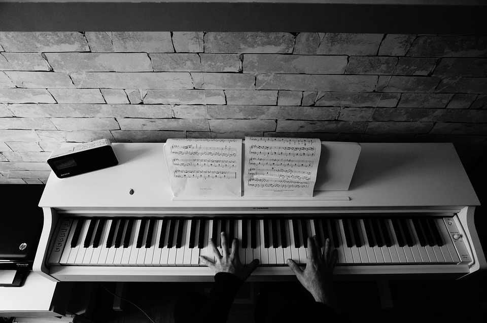
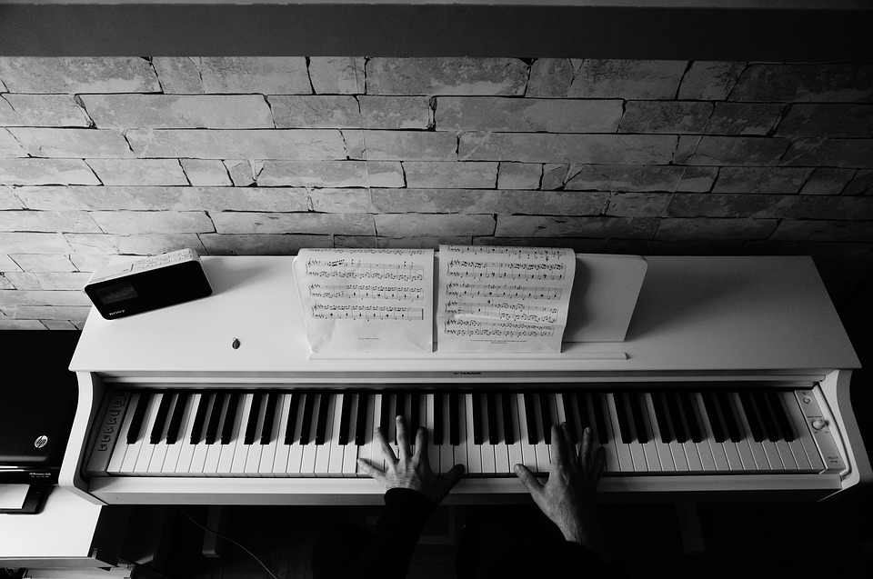
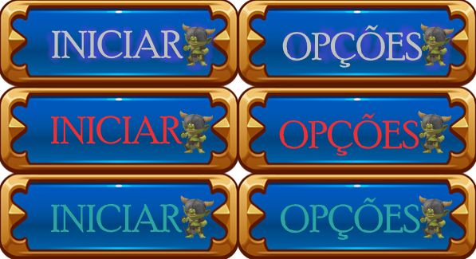

Imagem large: width:500px height: 500px;

imagem medium: width:250px height: 250px;
imagem small: width:100px height:100px;

Para mudarmos o tamanho da imagem usando o CSS, basta que utilizemos a propriedade width e height, e então especefique
o valor.
Sempre que vamos utilizar imagens no site, devemos definir um tamanho para small, medium e large.
E então sempre que adicionarmos a imagem no html, em vez de definirmos seu tamanho no prório html, podemos chamar entao uma classe
com o nome de img.small ou img.medium ou img.large.
Por exemplo, podemos definir as seguintes propriedades:
Imagem large: width:500px height: 500px;
imagem medium: width:250px height: 250px;
imagem small: width:100px height:100px;

 Como ja vimos anteriormente, podemos utilizar a propriedade float para realizar o alinhamento
dos blocos. Desta maneira também podemos utiliza-la para alinhar uma imagem. Podemos também utilizar junto
a propriedade margin para que haja um espaçamento entre o texto e a imagem.
Como ja vimos anteriormente, podemos utilizar a propriedade float para realizar o alinhamento
dos blocos. Desta maneira também podemos utiliza-la para alinhar uma imagem. Podemos também utilizar junto
a propriedade margin para que haja um espaçamento entre o texto e a imagem.
 Da mesma maneira de fizemos no escalonamento das imagens, podemos criar classes que indicam diretamente
o que ira ser feito na imagem, como por exemplo criar uma classe chamada img-align-left
para as imagens que deseja ser alinhadas a esquerda, a assim sucessivamente para as demais direções.
Da mesma maneira de fizemos no escalonamento das imagens, podemos criar classes que indicam diretamente
o que ira ser feito na imagem, como por exemplo criar uma classe chamada img-align-left
para as imagens que deseja ser alinhadas a esquerda, a assim sucessivamente para as demais direções.
A centralização de uma imagem é um pouco diferente do método anterior. Devemos utilizar a propriedade display. Por padrão, uma imagem é um elemento inline, isso significa que ela fica entorto de um texto. Dessa maneira, se desejamos centraliza-la, basta que adicionamento na propriedade display o valor block e mudamos também a margin para auto dessa maneira o navegador decide o valor da margin adequada a ser utilizada comumente ele utiliza o maximo de margin em todo os lados laterais, e dessa maneira alinha o objeto.
Podemos adicionar um imagem de fundo tanto em paragrafos, box, body, para isto basta utilizar a propriedade background-imagen:url("endereço")
Quando adicionamos uma imagem pequena, que não cobre toda a tela do navegador, podemos perceber por padrão que a imagem é repetida. Existe algumas propriedades que podemos utilziar para que possamos alterar isso se desejar.
Essa propriedade pode conter os seguintes valores: repeat-x (ira repetir a imagem apenas na direção x), repeat-y(ira repetir a imagem apenas na direção y) e no-repeat.
Podemos especificar a posição de uma imagem utilizando o background-position. Esta propriedade possui um par de valores, o primeiro representação a posição na horizontal e o segundo da vertical. Podemos então ter as seguintes combinações: left top, left bottom, left center, right top, right bottom, right center, center top, center bottom, center center. Além dos valores por escrito, podemos especificar os valores de x e y em porcentagem. Exemplo:50% 50%. O topo escordo equivale a 0% 0%.
Podemos escrever grande parte das propriedades anteriores de forma abreviada, usando apenas a propriedade background: valores. Os valores devem ser escritos na seguinte ordem
Conhecemos já algumas propriedades do CSS que nos permite mudar as propriedades do texto ao clicar e ao passar o mouse por cima.
Entretanto, podemos realizar essa mesma ação atraves de uma unica imagem, basta que façamos ela rolar de acordo com o passar do mouse ou clique.
Para isto, é necessário que tenhamos uma UNICA imagem, e na mesma conter todos os efeitos que desejamos ter ai clicar e passar o mouse,
dessa maneira, basta que se utilize a propriedade background-position para mudar a posição da imagem de acordo com a ação do usuario.
Por exemplo, a imagem abaixo temos dois botões, cada qual com três tipos de efeitos, um antes de passar ou mouse ou clicar, outro apos passar o mouse e outro
após clicar.

Diante da imagem montamos os buttons abaixo apenas mudando as posições da imagem.
Add to basket
Framing options
Podemos criar fundos de imagens gradientes, para isso basta utilizar a propriedade background-image. Temos dois tipos de gradientes o linear e o radial.
Os seu valores para a propriedade background-image devem ser especificados da seguinte maneira linear-gradient:(direção, cor1, cor2). A direção por padrão é top to bottom, entretanto para outras direções podemos especificar seu valor da seguinte maneira: to right(left to right), to bottom right(top left to bottom right), angulo(90deg por exemplo) .Além de duas cores, podemos utilizar quantas cores que desejar, basta adicionar seu nome após a cor 2. Podemos também utilizar transparencia basta utilizar as cores no formato rgba.
Para que as cores do gradiente seja repetida devemos utilizar o seguinte valor background-image: repeating-linear-gradient(direção/angulos, cores...)